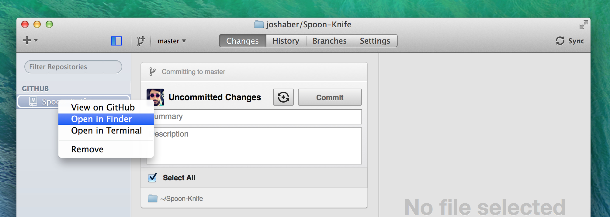
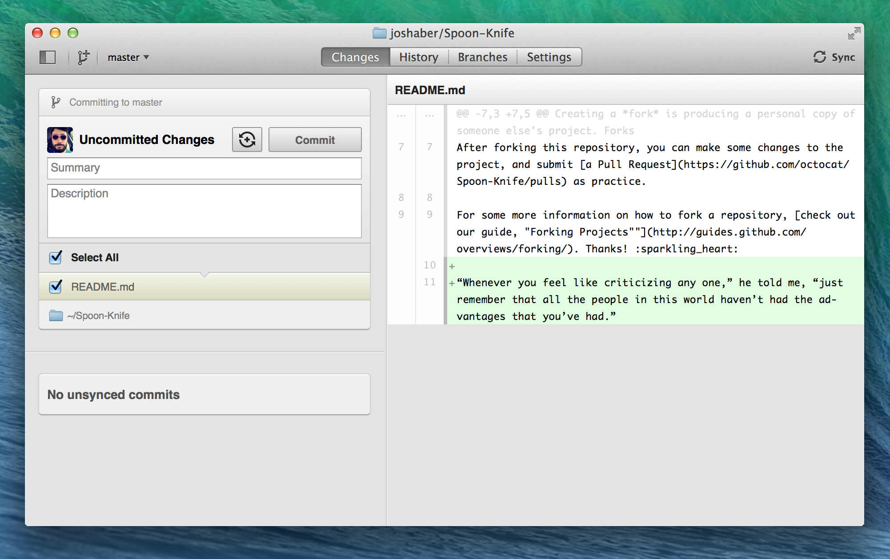
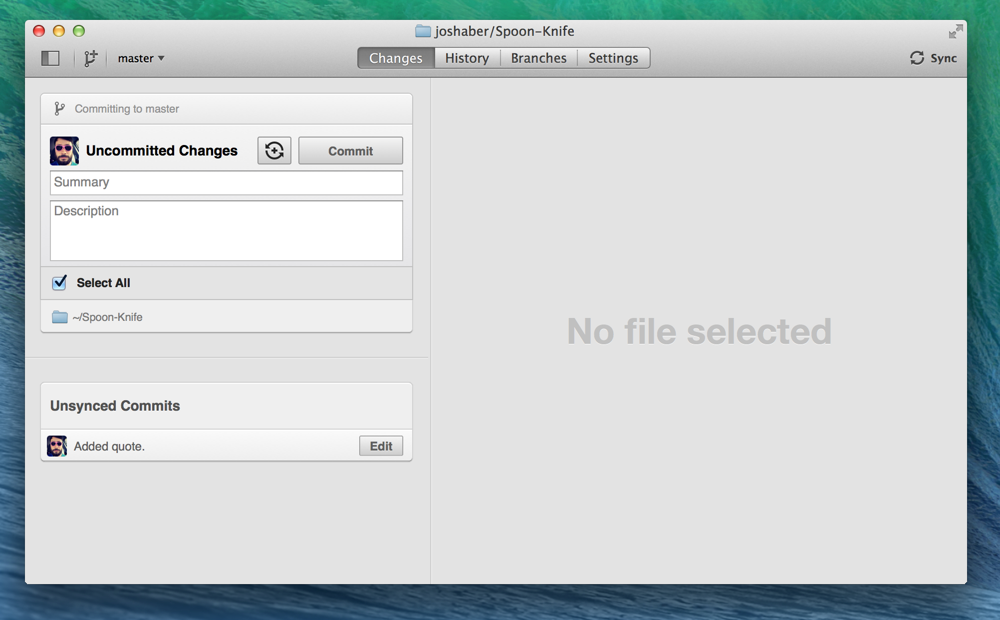
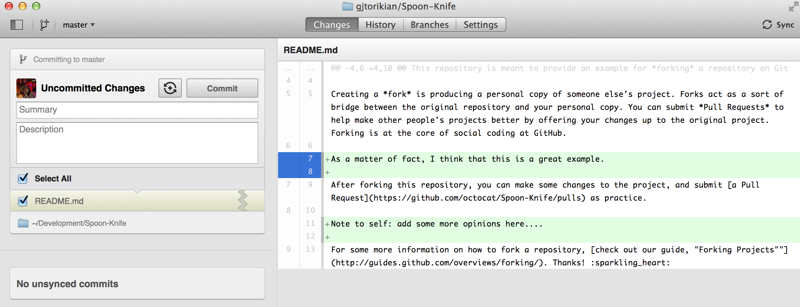

After you have forked a repository and cloned it to GitHub for Mac you can view the repository on GitHub.com and add some buddies as collaborators so that they could also work on your fork… but, first, let's make some changes ourselves!
GitHub for Mac includes a handy shortcut so that you can quickly view your repositories in the Finder:
- Find the repository in the list within the sidebar.
- Control-click the repository.
- In the contextual menu, select Open in Finder.

Make a change
If you cloned the Spoon-Knife repository, you'll notice that there are a few simple project files in it: A README text file, an HTML page, and a CSS file. Open README.md in your favorite text editor, change the text to whatever you like, and then save it.
Now that you've made changes to your local copy, let's use GitHub for Mac to commit this change.
What is a commit?
Think of a commit as a snapshot of your project – code, files, everything — at a particular point in time.
View your change
Switch back to GitHub for Mac and click Spoon-Knife in the Repositories list. This will show the Changes view, where you can see that README.md now has been highlighted as modified. On the right, you can see a diff showing which lines were changed.

What is a diff?
A diff is a simple, visual comparison between two files. It illustrates the difference between the latest version of a file and the previous version of the same file. Both GitHub.com and GitHub for Mac display diffs with a red highlight on lines where text has been removed, and a green highlight where text has been added.
Commit your change locally
To commit these changes, type a commit summary (and, optionally, an extended description, if you want to provide more details of the changes you made) and click Commit.
At this point you'll notice that there are now no files selected to commit – instead, there are now unsynced commits at the bottom. This means that your changes have been committed with Git locally but not yet synced to your remote repository on GitHub.com.

Making partial commits
If you click on the line numbers in the gutter, you can choose to make a partial commit. Only the lines highlighted in blue will be committed. The rest of your changes will remain intact, so that you can make additional modifications and commits.

Sync your changes with GitHub
To send those changes to your remote repository, all you have to do is click the Sync button in the upper-right of the window.
Warning: If you have made changes to a file in a local repository, it is very important that these are committed before attempting to sync. Otherwise, the app will return an error.
Tip: You can toggle the Commit button to Commit & Sync using the toggle next to “Uncommitted Changes” in the Changes view. This makes it quick and easy to make a commit instantly followed by a sync.
Celebrate
Congratulations! You've made some changes to a repository and committed them with Git. Now let's take a look at viewing the history of commits in a project.